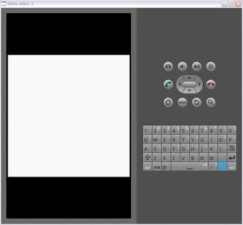

OpenGL ES基础教程（二）
二、绘制多边形
前面的教程都是关于设置GLSurfaceView.的，接下来的教程将教我们渲染出一个多边形。3D模型用较小的元素创建（点，边，面），他们可以被分别操作。
顶点


在Android中，我们通过float数组定义顶点，并将它放到字节型缓冲区内来获取更好的性能。
下例的代码即为上图所示顶点。
OpenGL ES的很多功能都必须手动的开启和关闭。
gl.glEnableClientState(GL10.GL_VERTEX_ARRAY);// 设置顶点数据，3代表XYZ坐标系
gl.glVertexPointer(3, GL10.GL_FLOAT, 0, vertexBuffer);
// 关闭顶点设置
gl.glDisableClientState(GL10.GL_VERTEX_ARRAY);
边

面

计算多边形面的时候，一定要注意正确的方向.。因为这将决定哪一面为正面哪一面为背面。 所以我们尽量保证整个项目都使用相同的环绕。
gl.glFrontFace(GL10.GL_CCW);
控制多边形的正面是如何决定的。在默认情况下，mode是GL_CCW。
mode的值为：
GL_CCW 表示窗口坐标上投影多边形的顶点顺序为逆时针方向的表面为正面。
GL_CW 表示顶点顺序为顺时针方向的表面为正面。
顶点的方向又称为环绕。
gl.glEnable(GL10.GL_CULL_FACE);
gl.glCullFace(GL10.GL_BACK);
剔除多边形的背面，禁用多边形背面上的光照、阴影和颜色计算及操作。
gl.glDisable(GL10.GL_CULL_FACE);
多边形


到了绘制面的时候了， 我们使用默认的逆时针环绕。
下例代码将绘制上图多边形。
// 将坐标数组放入字节缓存中// (1) 分配缓存，一个short为2个字节，所以要乘以2
ByteBuffer ibb = ByteBuffer.allocateDirect(indices.length * 2);
// (2) 设置字节处理规则
ibb.order(ByteOrder.nativeOrder());
// (3) 转换为short型字符
ShortBuffer indexBuffer = ibb.asShortBuffer();
// (4) 放入坐标数组
indexBuffer.put(indices);
// (5) 复位
indexBuffer.position(0);
渲染
是时候弄些玩意儿到屏幕上去了，绘制时我们将用到两个函数
public abstract void glDrawArrays(int mode, int first, int count)
通过我们构造的顶点缓存来绘制顶点
public abstract void glDrawElements(int mode, int count, int type, Buffer indices)
和glDrawArrays类似，但需要直接传入type（索引值的类型，如GL_UNSIGNED_SHORT, or GL_UNSIGNED_INT），和indices（索引缓存）
两者的共同点是，都必须知道他们需要画什么。怎样渲染图元，有不同方式，为了帮助调试，我们应该了解它们。
Mode：
GL_POINTS
绘制独立的点到屏幕

GL_LINE_STRIP
连续的连线，第n个顶点与第n-1个顶点绘制一条直线

GL_LINE_LOOP
和上面相同，但首尾相连

GL_LINES
各对独立的线段

GL_TRIANGLES
各个独立的三角形

GL_TRIANGLE_STRIP
绘制一系列的三角形，先是顶点 v0, v1, v2, 然后是 v2, v1, v3 (注意规律), 然后v2, v3, v4等。该规律确保所有的三角形都以相同的方向绘制。

GL_TRIANGLE_FAN
和GL_TRIANGLE_STRIP类似, 但其先绘制 v0, v1, v2, 再是 v0, v2, v3, 然后 v0, v3, v4等。

我认为GL_TRIANGLES是使用最方便的，所以我们将先使用它。
public class Square { // 顶点坐标数组
private float vertices[] = { -1.0f, 1.0f, 0.0f, // 0, 左上
-1.0f, -1.0f, 0.0f, // 1, 左下
1.0f, -1.0f, 0.0f, // 2, 右下
1.0f, 1.0f, 0.0f, // 3, 右上
};
// 连接规则
private short[] indices = { 0, 1, 2, 0, 2, 3 };
// 顶点缓存
private FloatBuffer vertexBuffer;
// 索引缓存
private ShortBuffer indexBuffer;
public Square() {
// 一个float为4 bytes, 因此要乘以4
ByteBuffer vbb = ByteBuffer.allocateDirect(vertices.length * 4);
vbb.order(ByteOrder.nativeOrder());
vertexBuffer = vbb.asFloatBuffer();
vertexBuffer.put(vertices);
vertexBuffer.position(0);
// short类型同理
ByteBuffer ibb = ByteBuffer.allocateDirect(indices.length * 2);
ibb.order(ByteOrder.nativeOrder());
indexBuffer = ibb.asShortBuffer();
indexBuffer.put(indices);
indexBuffer.position(0);
}
/**
* 绘制正方形到屏幕
*
* @param gl
*/
public void draw(GL10 gl) {
// 逆时针环绕
gl.glFrontFace(GL10.GL_CCW);
// 开启剔除功能
gl.glEnable(GL10.GL_CULL_FACE);
// 剔除背面
gl.glCullFace(GL10.GL_BACK);
// 开启顶点缓存写入功能
gl.glEnableClientState(GL10.GL_VERTEX_ARRAY);
// 设置顶点
// size:每个顶点有几个数指描述。
// type:数组中每个顶点的坐标类型。
// stride:数组中每个顶点间的间隔，步长（字节位移）。
// pointer:存储着每个顶点的坐标值。初始值为0
gl.glVertexPointer(3, GL10.GL_FLOAT, 0, vertexBuffer);
gl.glDrawElements(GL10.GL_TRIANGLES, indices.length,
GL10.GL_UNSIGNED_SHORT, indexBuffer);
// 关闭各个功能
gl.glDisableClientState(GL10.GL_VERTEX_ARRAY);
gl.glDisable(GL10.GL_CULL_FACE);
}
}
我们必须在OpenGLRenderer类中初始化square
square = new Square();<!--EndFragment-->
并在主绘制方法中调用square的绘制方法
public void onDrawFrame(GL10 gl) { // 清除屏幕和深度缓存
gl.glClear(GL10.GL_COLOR_BUFFER_BIT | GL10.GL_DEPTH_BUFFER_BIT);
// 绘制正方形
square.draw(gl);
}
如果你现在运行应用，我们又看到了华丽的黑屏，为什么？因为OpenGL ES渲染默认的当前位置为(0,0,0)，窗口的定位也一样。而且OpenGL ES不渲染太靠近窗体定位的东西。解决方法就是移动绘制的位置。
gl.glTranslatef(0, 0, -4); <!--EndFragment-->
再次运行应用你将看到该正方形已经被绘制，但是它好像离我们越来越远一样，最后消失了。
OpenGL ES不会在画面之间复位绘制点，所以我们要自己完成。
// 重置当前的模型观察矩阵gl.glLoadIdentity();<!--EndFragment-->
现在，我们运行应用将会看到一个固定位置的正方形。
